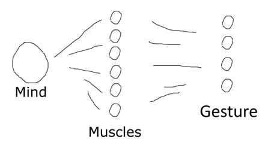

Machine Learning + HCI helps human acquire new modalities.
Take an example of muscle readings [1].

There are multiple ways to use muscles to perform the same gesture. The middle layer has higher info entropy than the resulting gesture. Because humans control muscles in a goal-oriented way, they are usually unaware of this middle layer. To illustrate that, imagine asking a human to distinguish between iso-gesture muscle usages. The human would have to start to notice that and learn that.
Suppose we can only measure muscles. A naïve implementation of HCI would be to reconstruct the desired gesture with ML. The desired gesture then serves as the control interface.
However, by providing feedback and making the human aware of the middle layer, the human can develop a new expression modality. We can achieve higher info throughput by using the middle layer, muscle readings, as the control interface.
To reduce starting confusions, we can first use the naïve method to establish connection with the human. Then, employ the second method, and see what the human finds out about their muscles. (A kind of scaffolding.)
The plasticity of the human provides the possibility of acquiring a brand-new modality one can use to control machines.
Another example is voice timbre. Voice timbre is controlled by mouth shape, tongue shape, and throat shape, but is surely a low-dimensional projection – many variations in mouth shape result in nearly indistinguishable timbre changes. An interesting application would be to map those lost dimensions to new timbre dimensions, allowing a human to sing with non-human voice. The scaffold here is that the human can still produce normal timbre using the same techniques as used in vanilla singing.
In the above examples, we see how easy it is to underestimate the amount of info the mind outputs. Similarly, we are also prone to overestimate the amount of info the mind intakes.
Take foveated rendering for example. When we invented the uniform-pixel display, we assumed the amount of info people needed to see a scene. From any baseline, lowering the spatial resolution will make images blurry and lowering the temporal resolution will make animations choppy. However, in the human eyes, the peripheral vision samples light info much more sparsely than the center of vision (fovea) does. We have the illusion of seeing everything in our vision only because our brains are good at filling in the blanks according to the visual context, especially in familiar environments. [2] developed a light field display that exploited this fact, eliminating the need to render >70% of all rays.
It is therefore not overly optimistic to expect to see more surprises in terms of human IO capabilities.
[1] Zbyszynski, M., Di Donato, B., & Tanaka, A. (2019). The Effect of Co-adaptive Learning & Feedback in Interactive Machine Learning.
[2] Sun, Q., Huang, F. C., Kim, J., Wei, L. Y., Luebke, D., & Kaufman, A. (2017). Perceptually-guided foveation for light field displays. ACM Transactions on Graphics (TOG), 36(6), 1-13.